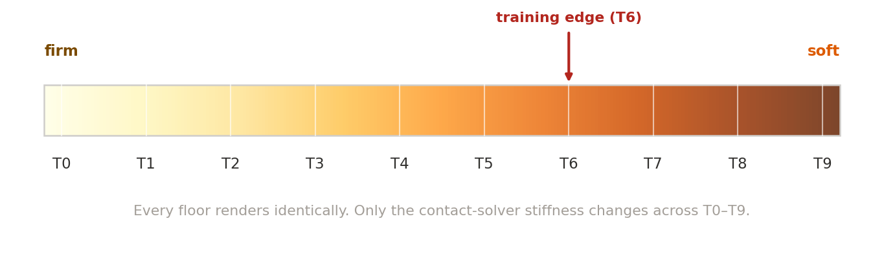
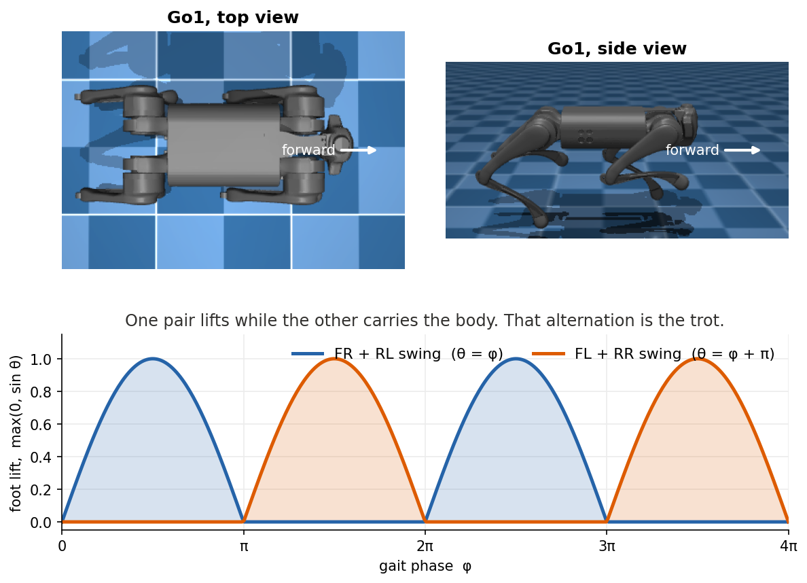
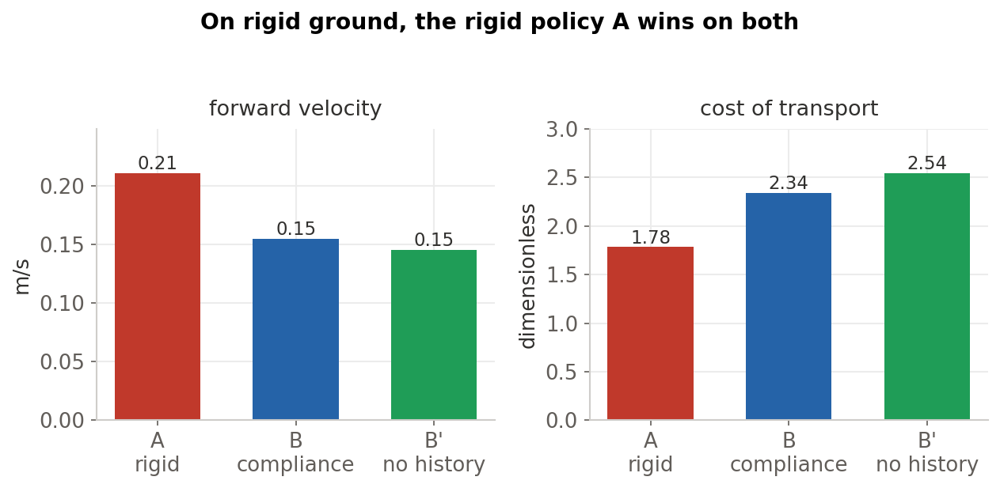
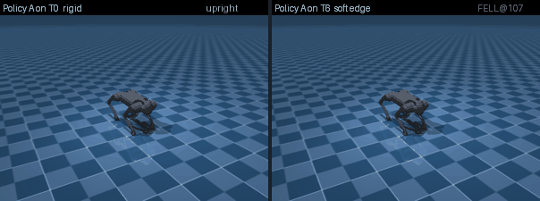
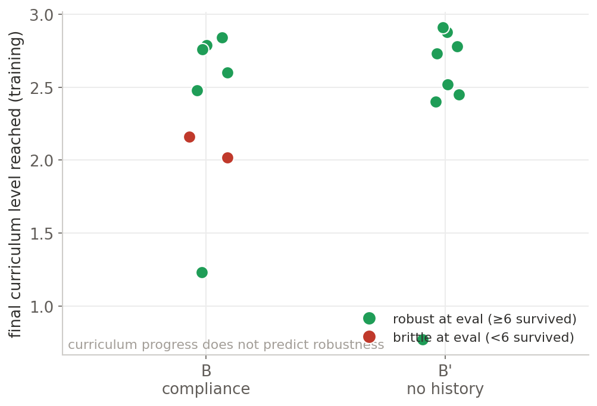
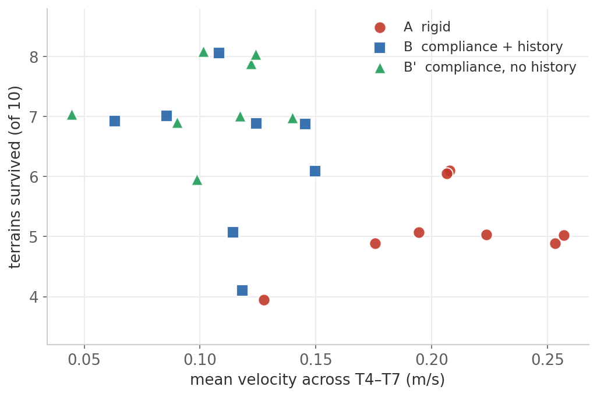
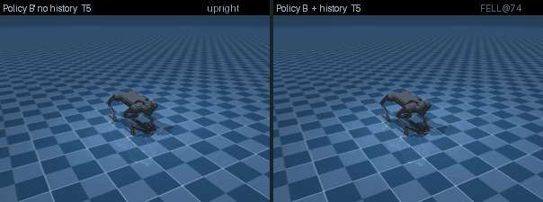
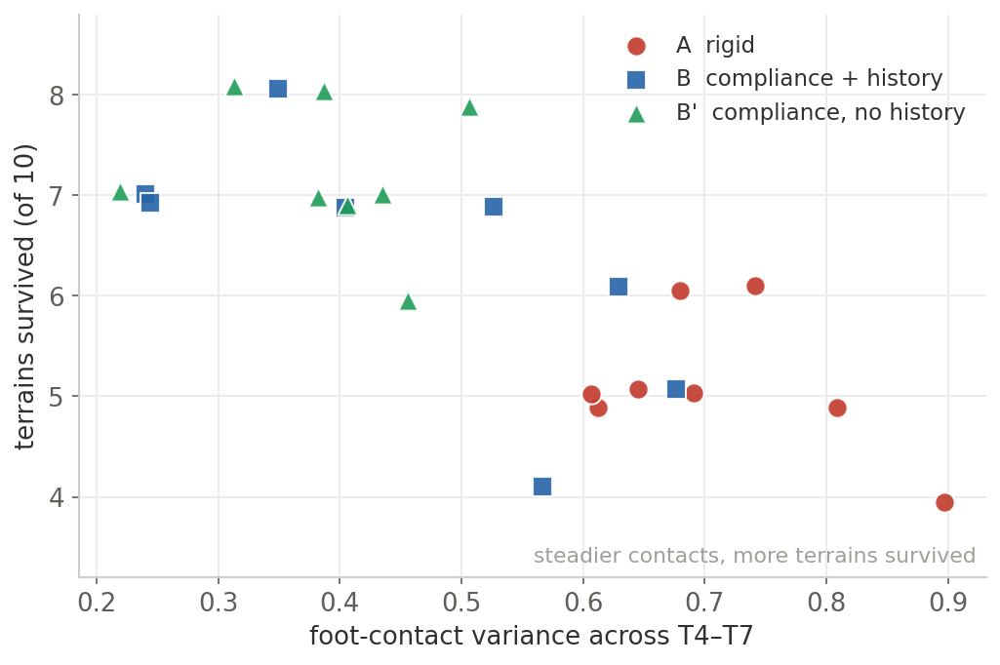

Fast Breaks Fast: Robustness Performance in Compliant Terrain Locomotion
What does it actually take for a robot to handle ground it was never trained on? I ran the experiment and found the answer.
The experiment
The robot is a Unitree Go1, a twelve motor quadruped, simulated in MuJoCo. The variable I control is the softness of the ground. In MuJoCo, contact softness is a solver setting, the stiffness and damping of the contact constraint, so I can sweep a floor from rigid to spongy without changing how it looks. Every floor in this study renders as the same flat checkered plane. Only the physics underneath changes. That is worth stating plainly, because a photo of the terrain would tell you nothing.

A trot prior the policy rides on
Walking does not have to be discovered from reward alone here. Every policy rides on a fixed trajectory generator, an open loop trot adapted from the PMTG approach34. A single phase variable advances at a fixed cadence,
and each leg is assigned a phase offset so that the diagonal pairs move together and the two pairs run half a cycle apart,
Each leg then traces an ellipse in joint space. The thigh swings fore and aft to drive the body forward, and the calf flexes only during the swing half of the cycle so the foot lifts and clears the ground,
qicalf = qnomcalf + s · Alift max(0, sin θi) Astride = 0.20 rad, Alift = -0.62 rad, and s = min(1, |vcmd| / vref) scales the gait with the speed command, so at zero command the legs hold a still stance
The diagonal trot falls out of the phase offsets. The front right and rear left legs share a phase, the front left and rear right legs are exactly half a cycle ahead, so whenever one diagonal pair is lifting, sin θ > 0, the other pair is planted and carrying the body. The network never invents this gait. It only outputs a residual on top of it,

This matters for reading the rest of the post. When I report that compliance training buys robustness, the gains belong to the residual the policy learns, not to gait discovery. With the trajectory generator removed, the same recipe produces a policy that stands and shuffles in place at about 0.004 m/s against a 0.2 target. The prior supplies propulsion. The policy supplies adaptation.
Three policies, one variable
The comparison is three policies trained with an identical recipe, the same trot prior, the same reward, the same optimizer settings, the same command curriculum, following the parallel PPO setup of Rudin and colleagues5. They differ in exactly two ways, the ground they train on and the proprioceptive information they are allowed to observe about their own motion.
- Policy A trains on rigid ground only.
- Policy B trains on a curriculum of contact softness, and observes a short history of its own foot positions and contacts, the proprioceptive history that Kim and Lee2 found essential for non rigid terrain. Its observation is 89 numbers.
- Policy B′ trains on the same softness curriculum but observes only its current state, with no foot history. Its observation is 49 numbers.
Holding everything else fixed is the entire point. Any difference at evaluation traces to one of those two variables. The observation design follows Lee and colleagues1.
Training and evaluation details
The policy runs at 50 Hz and outputs twelve residual joint targets, clipped and added on top of the nominal stance and the trot trajectory. Reward is a standard nine term locomotion objective, velocity tracking plus penalties on motion, torque, and impact, with the penalty weights ramped in over training so the robot does not settle on standing still as the cheapest way to avoid penalties, the penalty curriculum of Kumar and colleagues6. Training is PPO with a timeout correction so that surviving to the end of an episode bootstraps as success rather than scoring as a failure5. Physics parameters are sampled log uniformly7.
Evaluation is 100 episodes per seed per terrain, on a shared physics environment so that A, B, and B′ are judged under identical conditions, with 8 seeds per policy. Cost of transport is computed over non fallen episodes only, and a successful episode has to make forward progress rather than merely stay upright, so a frozen but upright robot is not counted as a survivor. The softness sweep runs from rigid, T0, to spongy, T9, with the training range ending near T6.
The result that held up
One finding is clean, holds across all eight seeds, and frames everything else. There is a tradeoff between peak performance and robustness, and it is monotonic in how much compliance the policy saw during training.
On rigid ground, its home turf, the rigid policy A is the strongest performer. It reaches the highest forward velocity, about 0.21 m/s against a 0.20 target, and the lowest cost of transport, so it is also the most energy efficient. The compliance policies are slower and less efficient here. This already settles the second prediction from the slate. Compliance training does not buy an efficiency win. It spends efficiency to purchase something else.

What they purchase appears the moment the ground turns softer than the training range. Past the training edge the rigid policy fails sharply, while the compliance policies keep their footing, and they do so in a strict order. Counting how many of the eight seeds hold their fall rate below one half, at the soft terrain T5 the rigid policy A holds in 3 of 8 seeds, B holds in 6, and B′ holds in all 8. One step softer, at the training edge T6, A holds in 1, B in 5, and B′ in 7. The ordering never crosses. B′ is at least as robust as B everywhere, and B is always ahead of A.

The difference is stark in the simulator. On the left the rigid policy walks confidently on rigid ground. On the right the same policy, the same weights, meets ground only slightly softer than it was trained for.

Why some seeds generalize and others do not
The robustness ordering is real and reproducible. The interesting question is what produces it, and here two natural explanations, each clean and well motivated, did not survive a direct test. I report them as I checked them, the claim, the test, and what the data showed.
This prediction was intuitive enough that a reviewer expected it, which is exactly why it was worth checking. If a seed grinds further up the softness curriculum, surely it has learned more about soft ground. The data says the two are nearly unrelated. A seed that stalled early in the curriculum can be among the steadiest at evaluation. The practical consequence is concrete. A model selection rule that picks checkpoints by curriculum progress would pick the wrong ones.

This was the most tempting explanation, because the correlation is genuinely strong. Faster seeds are less robust, at a correlation of -0.40. The rigid policy and the history policy are the fast ones and survive the fewest terrains, while the slower, steadier seeds survive the most.

So I tested it directly. I commanded the brittle and the robust seeds to walk at matched speeds and measured how often each fell on the same soft terrain. If speed were the cause, matching it should erase the gap. It did not. Driven to the same velocity, the brittle seeds collapsed almost every time while the robust seeds almost never fell. The only speed at which a brittle seed is safe is no speed at all. Velocity was a symptom of the real difference, not the difference itself.

The prediction I was most confident about
The central prediction, the one drawn most directly from the literature, was that foot contact history would be necessary to survive soft ground. Kim and Lee2 show that an end effector history helps a quadruped on non rigid terrain, and Policy B carries exactly that signal. The result reverses the prediction. Policy B′, with no history, is at least as robust as Policy B at every terrain in the transition. The extra forty numbers of foot history did not help, and were associated with a faster, less settled gait that fell sooner.
I do not claim a settled mechanism for why the richer observation did not help. Two readings are consistent with the data. The added history may invite a more active style of adaptation that is less stable on soft contact, or the larger input may simply be harder to optimize within the same training budget. Either way, the simpler policy generalized at least as well, and that is a useful and slightly surprising thing to know. More observation was not better here.
The difference is visible in how they move on soft ground.

What robustness actually is
If it is not history, not curriculum progress, and not speed, then something separates the seeds that survive softening from the ones that do not. The property that holds up is gait quality, specifically the steadiness of foot contact. The robust seeds settle into a gait whose foot contacts are regular and low in variance. The brittle seeds have noisier, more variable contact patterns. On soft ground, where each footfall sinks a little and the timing of support shifts under the robot, the steadier gait is the one that keeps its balance.

This property is measurable, and it is the one I would build on. What I could not yet do is produce it on demand. Two attempts to make training reliably find the steady gait, a curriculum gated on competence and a small exploration bonus, did not remove the roughly one in eight seed that never reaches it. Robustness here is a discrete outcome that a training run either reaches or does not, visible after the fact in the contact variance. Turning it into a reliable target is the natural next step.
Where the gains stop
The benefit has a clear edge. Compliance training widens the band of survivable softness, but it does not produce open ended extrapolation. Past the training edge the margin is thin. B′ holds in 3 of 8 seeds one step beyond, B in 1, A in none, and one step further than that every policy collapses to near total falls. Almost all of the useful separation between policies lives inside the trained range.

So here is the claim, stated with the bound it earns. Randomizing contact softness during training measurably extends the survivable softness range of a trot prior residual policy, with a monotonic benefit in the amount of compliance seen. It is a real and useful gain, and it stops at the edge of the trained range.
What this adds up to
The headline is a clear, reproducible result with a twist. Training on varied contact softness makes a quadruped generalize to softer ground, monotonically in how much compliance it saw, and at a measured cost to speed and efficiency. The proprioceptive history that the literature treats as the key ingredient was not necessary here. And the robustness that does appear is a specific, measurable property of the gait, its contact steadiness, rather than a knob like speed or curriculum progress.
The explanation that ships is the one that survived an attempt to break it.
Three intuitive accounts of the robustness, that history carries it, that curriculum progress predicts it, and that slowness causes it, were each clean and well motivated, and each failed a direct test. The version of this result that I trust is the one left standing after I tried to falsify the parts I found most appealing. That discipline is what turns a tidy story into a finding.
The most useful results here are the ones that say what does not matter.
Knowing that foot history is not required, that a simpler observation generalizes at least as well, and that curriculum progress is the wrong signal for model selection, each of these narrows the design space for the next system. That is the contribution. Here is the slate again, settled.
- ✗Foot contact history is required to survive soft ground.
- ✗Compliance training also buys an efficiency win.
- ✗The seeds that climb highest in the curriculum are the robust ones.
- ✗Slower gaits are inherently safer on soft ground.
- ✓Robustness is a soft contact stable gait, measurable as low foot contact variance, that some training runs find and some do not.
The next steps follow directly. Reward the steady gait explicitly and see whether robustness becomes reliable rather than seed dependent. Probe why the added history did not help, by shrinking it or by training the larger policy longer. Move from solver level softness to genuinely deformable ground, the foam and mud version of the problem. And add slopes, payloads, and pushes, to learn whether the simpler observation keeps its edge when the axis of difficulty changes. The result I trust most is also the most actionable. Robustness on soft ground is a gait property I can now measure, and the work ahead is to make it one I can reliably train for.
References
- J. Lee, J. Hwangbo, L. Wellhausen, V. Koltun, M. Hutter. Learning Quadrupedal Locomotion over Challenging Terrain. Science Robotics, 2020. arXiv:2010.11251.
- T. Kim, S. Lee. Quadruped Locomotion on Non Rigid Terrain using Reinforcement Learning. 2021. arXiv:2107.02955.
- A. Iscen, K. Caluwaerts, J. Tan, T. Zhang, E. Coumans, V. Sindhwani, V. Vanhoucke. Policies Modulating Trajectory Generators. Conference on Robot Learning, 2018.
- J. Tan, T. Zhang, E. Coumans, A. Iscen, Y. Bai, D. Hafner, S. Bohez, V. Vanhoucke. Sim to Real, Learning Agile Locomotion for Quadruped Robots. Robotics, Science and Systems, 2018. arXiv:1804.10332.
- N. Rudin, D. Hoeller, P. Reist, M. Hutter. Learning to Walk in Minutes Using Massively Parallel Deep Reinforcement Learning. Conference on Robot Learning, 2022. arXiv:2109.11978.
- A. Kumar, Z. Fu, D. Pathak, J. Malik. RMA, Rapid Motor Adaptation for Legged Robots. Robotics, Science and Systems, 2021. arXiv:2107.04034.
- X. B. Peng, M. Andrychowicz, W. Zaremba, P. Abbeel. Sim to Real Transfer of Robotic Control with Dynamics Randomization. ICRA, 2018. arXiv:1710.06537.